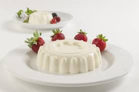
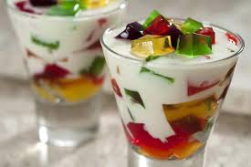
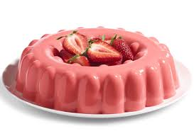
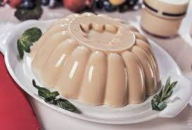
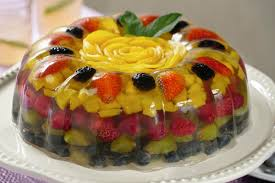
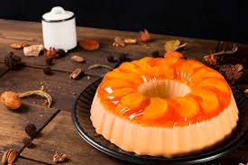
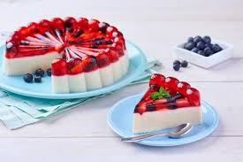
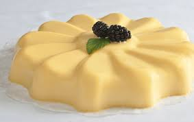

POSTRES
Gelatinas
Inicio
Blog
GELATINAS
Recetas ricas y faciles.

Gelatina de leche

Gelatina de mosaico

Gelatina de fresa

Gelatina de nuez

Gelatina de frutas

Gelatina de yogurt de durazno

Gelatina de arandano

Gelatina de rompope
Estas son las mejores recetas y muy faciles de gelatinas ricas que te encantaran.